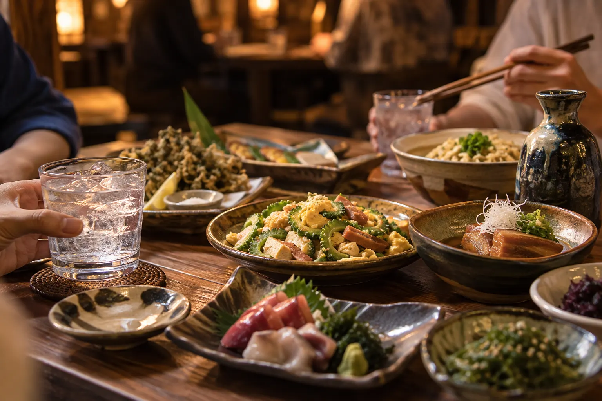
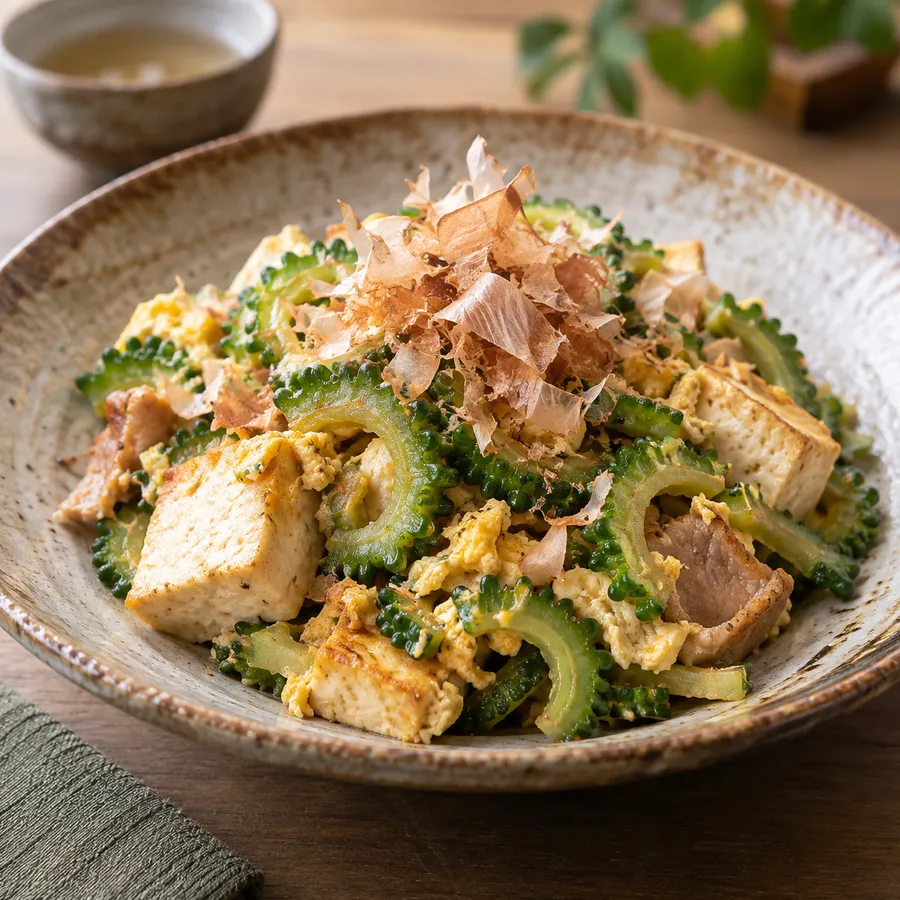
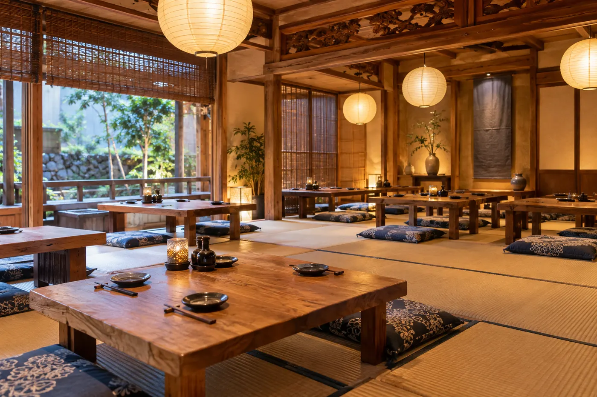
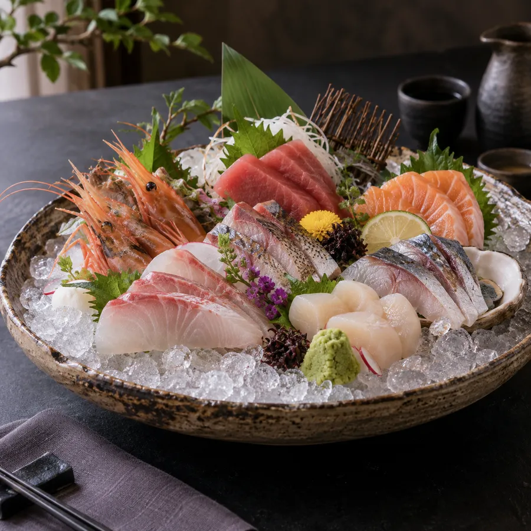

Island food and awamori, tonight again.
Walk-ins welcome · book for groups ・ Island food & awamori tavern
Champuru, local sashimi and handmade island tofu. An island-style tavern in Urasoe for after work.
Concept
Fish bought at the market every morning and island tofu from the shop next door. Honest island cooking at friendly prices.
Over 40 kinds of awamori. Friday nights with live sanshin music get especially lively.
Manager

Menu
Prices include tax. Courses for 4 guests or more.
Interior
Counter, tables and tatami. Private hire for farewell parties and reunions.


Information
Reservations
Walk-ins welcome · book for groups. Book by phone, LINE or online.